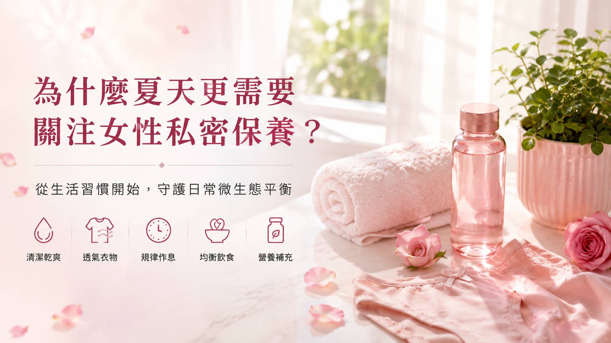
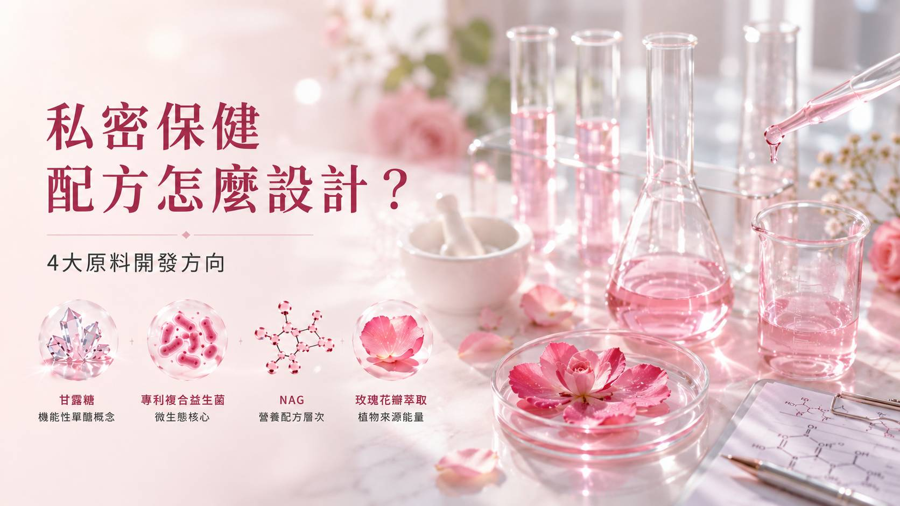
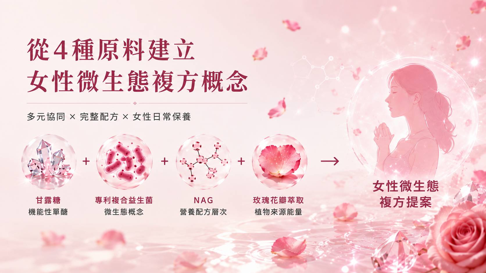
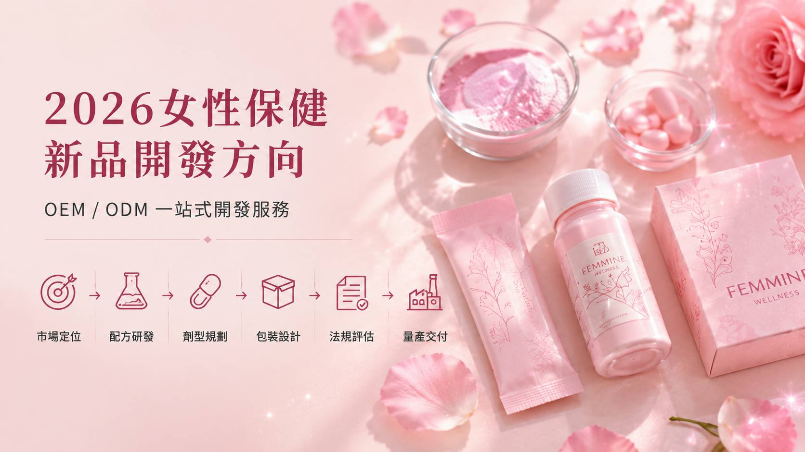

💡 從私密益生菌、甘露糖、NAG到植物萃取，掌握女性保健食品 OEM／ODM 複方開發趨勢。
夏季高溫、悶熱，加上久坐、運動流汗、貼身衣物與生活作息變化，「女性私密保健」逐漸成為女性日常健康管理的重要議題。消費者對私密保養的觀念，也正從單純清潔延伸至生活習慣、均衡營養與女性微生態等多面向管理。對保健品牌而言，這也帶動女性益生菌與複方營養產品的開發機會。
☀️ 為什麼夏天更要重視女性私密日常保養？

女性私密部位有其自然的微生態環境，不同微生物共同存在，並形成動態的菌相組成。生活作息、清潔方式、生理週期、衣著與環境等因素，都可能使微生態環境產生變化。
尤其夏季氣溫與濕度偏高，流汗後長時間維持潮濕、久坐或穿著較貼身、不透氣的衣物，更容易讓女性感受到私密日常保養的重要性。因此，女性私密保養應先從生活管理開始：
- ✅ 保持適度清潔與乾爽
- ✅ 選擇透氣舒適的衣著
- ✅ 流汗後適時更換衣物
- ✅ 避免過度清潔
- ✅ 維持規律作息與均衡飲食
- ✅ 依自身需求規劃日常營養補充
私密保健不是只有特定時候才需要關注，而是女性日常健康管理的一環。
🦠 女性微生態是什麼？為什麼「菌相」受到關注？
人體不同部位都存在各自的微生物群落，女性私密環境也不例外。這些微生物彼此共存，形成所謂的「女性微生態」。因此近年益生菌研究與產品開發逐漸走向更精準的概念：
益生菌不是只看「有沒有添加」，更要關注菌株是誰。
不同菌株具有不同特性，因此在女性益生菌產品開發時，常進一步評估：
菌株來源 × 菌株組合 × 菌數規格 × 專利資料 × 科學研究
這也是目前「私密益生菌」與一般益生菌產品進行市場區隔的重要開發思維。
🔬 從單一益生菌走向「女性微生態複方」
過去益生菌產品多集中於單一營養概念，現在女性保健食品則逐漸朝向複方設計。常見的開發邏輯可延伸為：
專利複合益生菌
以特定菌株及菌株組合為核心，建立女性微生態的產品概念。
甘露糖 D-Mannose
甘露糖是一種天然存在的單醣，可存在於部分水果及植物中。因其特殊的分子結構與女性保健相關研究，使 D-Mannose 成為近年女性私密保健產品受到關注的原料之一。
N-乙醯基葡萄糖胺 NAG
NAG（N-Acetyl Glucosamine）為胺基糖的一種，可作為複方營養設計的一環，與益生菌、甘露糖等不同類型原料搭配，增加女性保健產品的配方完整度。
玫瑰花瓣萃取物
植物萃取物除了增加配方多元性，也能提供品牌更多原料故事與女性市場溝通素材。玫瑰的花漾意象與女性保養具有高度連結，因此適合運用於女性日常保健的產品定位。

🛡️ 女性私密保健的配方機轉，重點不是「原料越多越好」
女性保健食品開發真正值得思考的，是每一項原料在整體產品概念中的定位。可以將開發邏輯拆成四個層次：
- 🦠 益生菌 ➔ 建立女性微生態與菌株概念
- ➕ 甘露糖 ➔ 增加不同營養來源與配方特色
- ➕ NAG ➔ 延伸複方營養設計
- ➕ 植物萃取 ➔ 增加植物來源與女性市場識別
這樣的產品思維，讓女性私密保健從「單一成分」進一步發展成微生態 × 營養 × 植萃的複方架構。對品牌而言，也更容易發展出具有差異化的女性保健產品故事。
🛒 私密益生菌怎麼挑？消費者可以先看這幾件事

面對市場上不同的女性益生菌產品，除了菌數之外，也可以進一步了解：
- 看菌株，而不只是看菌種：同一菌種中的不同菌株，其研究資料與特性可能有所差異。
- 看是否具有清楚的菌株來源：完整標示有助於了解產品所使用的菌株資訊。
- 看複方設計是否符合自己的需求：除了益生菌，也可了解是否搭配其他營養素或植物來源成分。
- 回到生活習慣：營養補充不能取代均衡飲食、正常作息及良好的個人衛生習慣。
※ 如果出現持續或明顯的不適，仍應尋求專業醫療人員評估，而不是單靠保健食品處理。
🎯 2026女性保健市場：從「成分導向」走向「生活情境導向」

女性保健市場正在進一步細分。品牌在規劃新品時，可以先思考消費者是誰：
久坐上班族｜運動女性｜熟齡女性｜外食族｜夏季保養族｜重視日常保養的女性
再決定開發流程：
TA設定 ➔ 使用情境 ➔ 原料 ➔ 配方 ➔ 劑型 ➔ 包裝 ➔ 市場溝通
例如膠囊適合建立簡單、精準的每日補充概念；粉包則可結合風味與沖泡情境，增加日常使用體驗。因此，女性保健食品開發不應只問「現在流行什麼原料？」，更應該問：
「我要替哪一種女性、哪一個生活情境，設計什麼產品？」
🤝 BKE 百達醫｜女性保健食品 OEM／ODM
從女性益生菌、女性微生態、甘露糖 D-Mannose、NAG 到植物萃取，私密保健正朝向更完整的複方開發方向發展。對準備布局女性保健市場的品牌而言，可從以下流程建立完整開發：
市場定位 ➔ TA分析 ➔ 原料評估 ➔ 配方研發 ➔ 劑型規劃 ➔ 法規評估 ➔ 包裝設計 ➔ 生產量產
2026女性私密保健新品的競爭重點，不只是「添加多少成分」，而是能否將科學原料、女性微生態概念與真實生活需求整合成一個消費者容易理解的產品定位。
從一個生活需求出發，才能讓一張配方真正變成有市場定位的女性保健新品。
BKE 百達醫企業 | OEM / ODM 一站式保健食品代工